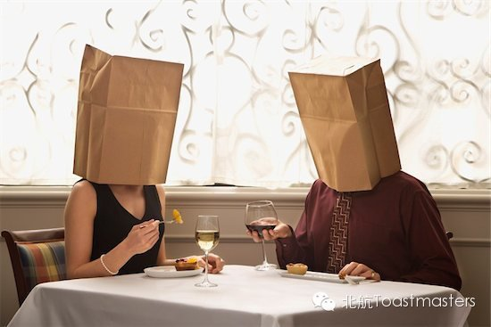
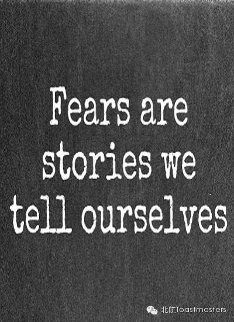
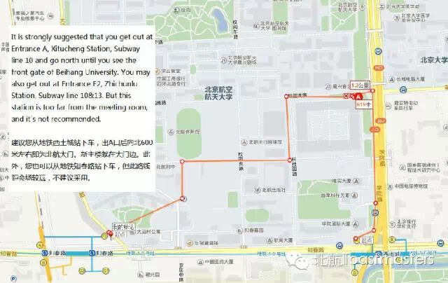

Time: Friday September.26 19:30-21:30
Venue: Room A209, New Main Building, Beihang University

Toastmaster: Dale
Table Topic Master: Megan
Hey, guys! Have you ever heard about blind date? What do you think about it? Graduated from college, more and more people around me have experiences of blind date. Have you had one? Have you experienced any strange, uncomfortable or happy blind date? No matter whether you favor blind date or not, come and join in us! Express your ideas about it and share your experiences with us. I guarantee you will enjoy it!
More tips: our beautiful, single and available Table Topic Master - Megan will share some her own secret blind date stories with us! No more hesitate! Just come! There is no reason to miss that!
Prepared Speech
CC3 Jack
Video game addiction is a new addiction in the 21st century. Many children, teenagers and even adults indulge themselves in video games. This is quite a serious problem. But our speaker, Jack, is so humorous that he can always make us laugh loudly. When a serious topic meets a humorous boy, what will happen? Let us wait and see!
Prepared Speech
CC5 Veronia

Pressure, difficulties, frustration, ghosts, vampires, werewolves, public speeches, work interviews, or the girl/boy you love, which one do you fear? In our eyes, Veronica is not only graceful but also tough and fearlessly brave. What does she fear? why? More importantly, how does she overcome this? If you want to know the secret as I do, come to our meeting! I'll wait for you!
Our meeting venue is Room A209, New Main Building, Beihang University (北航新主楼A209房间). Click here to see large map. And you can phone to Deron for help.
TEL: 180-0125-3933

If you hesitate to come to our meeting, I strongly encourage you to have a try, seizing your day, changing yourself, being a better person and at last making your own decision. You would never regret!
See you in the meeting!